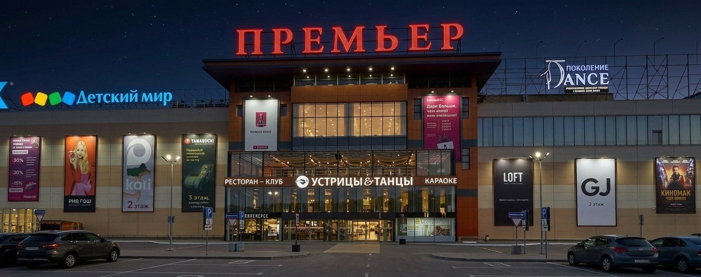
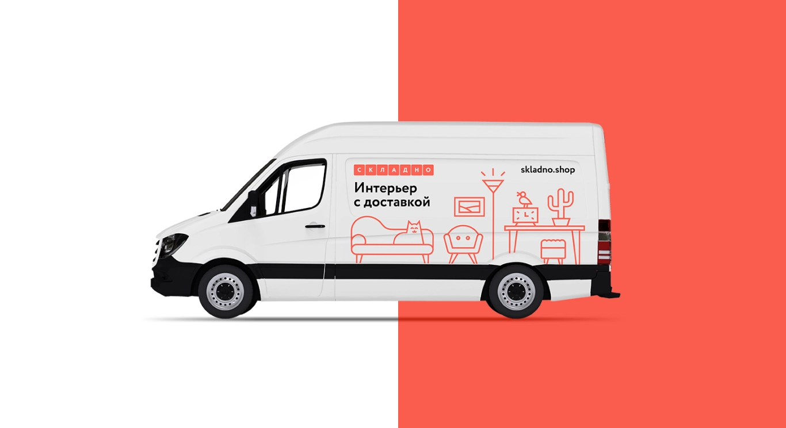

вариантов дескриптора
Сопровождающая формулировка, задающая тип и масштаб объекта, с правилами употребления имени с дескриптором и без него.

Позиционирование, вербальная система, айдентика и навигация объекта «Премьер».
01 · Контекст
Объект работает с 2012 года, входит в число крупнейших в своей зоне охвата: 65 000 м² GLA, 180 арендаторов, якоря «Ашан», «Киномакс», FunkyTown, паркинг на 2500 машино-мест. На уровне бренда «Премьер» пока ограничивается названием: без позиционирования, визуальной идентичности и единой навигации.
Параллельно Serenity готовит новый сайт ТРЦ, отдельное и уже согласованное направление стоимостью 994 000 ₽. В этой презентации разбираем ребрендинг: как он устроен и что клиент получает на каждом этапе.
02 · Ребрендинг
Бренд-платформа фиксирует, чем «Премьер» является для аудитории и региона. Дальше на неё опираются вербальная система, логотип и tone of voice.
Суть бренда Предельно сжатая формулировка того, чем «Премьер» является для аудитории.
Позиционирование Лидер региона: 65 000 м² GLA, 180 арендаторов, якоря «Ашан», «Киномакс», FunkyTown, паркинг на 2500 машино-мест.
Смысл имени Что означает «Премьер» применительно к объекту и как эта идея прочитывается аудиторией, без смены названия.
Миссия Роль объекта в жизни города и области.
Ценности Не более четырёх, каждая с описанием того, как она проявляется в решениях.
Характер и tone of voice Архетип бренда и производный от него стиль коммуникации.
Портреты аудиторий Не менее четырёх сегментов с приоритизацией: посетитель, арендатор, пресса, соискатель.
Отстройка и легенда Чем объект сознательно не является на фоне конкурентов, и связный текст бренда для внешних и внутренних коммуникаций.
Вербальная система
Сопровождающая формулировка, задающая тип и масштаб объекта, с правилами употребления имени с дескриптором и без него.
Слоганы и ключевые сообщения проверяются на уникальность, благозвучность и правовые риски перед финализацией.
Навигационные и информационные надписи; социальные сети; объявления по системе оповещения; коммуникация в нештатных ситуациях.
Айдентика
Пять принципиально разных направлений на первой итерации. Направление для доработки выбирается совместно с клиентом по трём критериям: соответствие бренд-платформе, различимость на носителях объекта, технологичность в производстве. Выбранное направление финализируется в систему из восьми версий. Дизайн знака пока не разработан. Ниже показан принцип, по которому он будет проверяться.
Основной знак Словесно-графическая версия для главных носителей.
Горизонтальная Для широких форматов: бланк, шапка сайта, баннер.
Вертикальная Для узких и высоких носителей: пилон, стела.
Компактная Для ограниченного пространства носителя.
Знак без текста Для мелкого воспроизведения и иконок.
Монохром Для одноцветного воспроизведения и гравировки.
Инверсия Для тёмных и контрастных фонов.
Для мелкого размера Отдельно выверенная версия под минимальные размеры.
К знаку прилагаются правила применения: охранное поле, минимальные размеры под каждый тип носителя, недопустимые искажения, размещение на фото и сложном фоне.
Проверка масштаба знака
Схема демонстрирует метод проверки читаемости знака на четырёх дистанциях. Финальный знак и его пропорции определяются на этапе «Айдентика».
Фирменная система
Цвет Три уровня палитры: основная (не более трёх доминирующих цветов), расширенная для коммуникаций и сезонных задач, функциональная для кодирования уровней и зон. Значения фиксируются в Pantone, CMYK, RGB, HEX, а также RAL и NCS для плёнок, красок и покрытий носителей.
Типографика Основной и акцентный шрифт с полной поддержкой кириллицы; шкала размеров, интерлиньяж, трекинг и правила вёрстки для печати, среды и цифровых носителей.
Графическая система Модульная сетка и принцип построения композиций; паттерн, знаки, линии, формы для форматов носителей.
Пиктограммы Единый модуль на 7 категорий, плюс правила построения новых знаков силами заказчика в дальнейшем.
Результат ребрендинга
Том 1 Бренд-платформа: позиционирование, суть бренда, аудитории, бренд-легенда.
Том 2 Руководство по идентичности: имя, дескриптор, tone of voice, знак, цвет, типографика, графика, пиктограммы, правила применения.
Том 3 Применение: решения по навигации, конструкциям и носителям объекта.
Передача PDF + редактируемые исходники, лицензии, очный обучающий семинар для команды ТРЦ, комплект материалов для подачи заявки на товарный знак.
Три тома служат рабочим инструментом команды ТРЦ и её подрядчиков. По ним дальше согласовываются макеты, носители и новые пиктограммы.
03 · Пространство ТРЦ
Навигация объекта строится по четырём уровням: у каждого своё назначение, принцип, тип носителя и применение.
Ориентирует на подъезде и парковке. Видимость важна с дороги, поэтому здесь используются стелы и консоли у въездов и вдоль парковочных проездов.
Подтверждает вход и даёт общую картину объекта. Это точка принятия решения, поэтому здесь размещаются карта-схема и пилон у каждой входной группы.
Проводит по этажу к категории или бренду. Указатели должны считываться на ходу, поэтому используются подвесные и настенные конструкции над проходами и у развилок маршрутов.
Обозначает конкретное помещение или сервис. Здесь важны точность и доступность, поэтому применяются таблички и пиктограммы у входов в помещения и сервисные зоны.
Конструкция носителей допускает замену наименований сменными вставками, без демонтажа и переизготовления.
Наружные конструкции: 5 типов
На фасаде здания
Отдельно стоящая, у подъездов
Обозначение входов
Указатели на территории объекта
Навигация и обозначения парковки
Габариты, пропорции и способ подсветки прорабатываются в объёме, достаточном для постановки задания проектной организации.
Фасад: текущее состояние
Носители
Наружная реклама
Печать
Пространство объекта
Деловые носители
Плюс сетка форматов и правила вёрстки контента, общие для всех цифровых носителей.
04 · Процесс
Каждый этап завершается контрольной точкой: совместным разбором и согласованием результата с командой ТРЦ.
Сумма этапов: 17 недель. Разработка вербальной системы начинается на финальной неделе бренд-платформы, а применение на носителях на финальной неделе айдентики. Часть этапов идёт параллельно, поэтому итоговый календарный срок сокращается до 14 недель.
Что делаем: аудит цифровых точек контакта, интервью с командой, проверка правовой охраны обозначения.
Показываем и согласовываем: аналитический отчёт и 2–3 гипотезы позиционирования.
Результат: заключение по правовому аудиту имени и согласованные гипотезы, основа для бренд-платформы.
Что делаем: формулируем суть бренда, позиционирование, содержание имени, миссию, ценности, характер, портреты аудиторий, бренд-легенду.
Показываем и согласовываем: черновик бренд-платформы на встрече с командой ТРЦ.
Результат: утверждённый документ бренд-платформы, основа для следующих этапов.
Что делаем: имя, дескриптор, слоган, суббренды; логотип: 5 направлений; цвет, типографика, графика, пиктограммы.
Показываем и согласовываем: 5 направлений знака на защите концепций; выбранное направление дорабатывается в систему из 8 версий.
Результат: утверждённое направление знака, вербальные правила, фирменная система.
Что делаем: наружные конструкции, навигация в 4 уровнях, цифровые и печатные носители.
Показываем и согласовываем: макеты носителей на реальных фотографиях объекта.
Результат: решения по носителям объекта, готовые к производству.
Что делаем: собираем три тома документации, передаём исходники и лицензии, проводим обучающий семинар.
Показываем и согласовываем: финальный комплект документации с командой ТРЦ.
Результат: три тома, исходники, обучение команды, материалы для подачи заявки на товарный знак.
05 · Стоимость
Срок 14 недель. Сайт, производство и монтаж носителей, ведение соцсетей не входят. В стоимость входят две итерации правок, далее по отдельной оценке.
Разработка сайта, отдельное направление с уже согласованной стоимостью 994 000 ₽, в сумму ребрендинга не входит.
Дополнительно, при возникновении соответствующей необходимости: лицензии на коммерческие шрифты по фактической стоимости выбранной лицензии; командировочные расходы отдельно, по предварительному согласованию с заказчиком.
06 · Опыт Serenity

Новый бренд и сайт для дистрибьютора звукового оборудования.
Смотреть кейс ↗
Имя, позиционирование и фирменный стиль для сети магазинов одежды.
Смотреть кейс ↗
Айдентика и сайт-каталог для дистрибьютора плитки в Германии.
Смотреть кейс ↗
Имя, стиль и интернет-магазин мебели.
Смотреть кейс ↗«В рамках фирменного стиля мы получили несколько вариантов логотипа и стиль, отражающий направление деятельности компании в реалиях немецкого рынка»
Василий Шефер, CEO, Schäfer FliesenДоверие
Фиксируем цели проекта, работаем совместно с командой клиента и принимаем решения по результату.
Нас отмечает индустрия
Разработка бренд‑стратегий в России
Digital‑маркетинг для e‑commerce · DarkRain
Самые награждаемые агентства по маркетингу · Санкт‑Петербург
Самые награждаемые агентства по маркетингу
Самые награждаемые маркетинговые агентства
Разработчики сайтов на Tilda
Техническая поддержка веб‑проектов
Разработчики сайтов в России
Корпоративные digital‑решения · Санкт‑Петербург
Брендинговые агентства · Санкт‑Петербург
Брендинговые агентства России
Разработчики лендингов в России
Брендинг для промышленных предприятий
Цифровая трансформация бизнеса
Serenity × Премьер
На встрече обсудим бренд-платформу, направления айдентики и график защиты концепций перед командой ТРЦ.
Обсудить проект 1место
1место